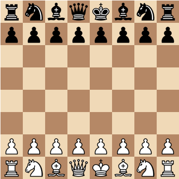

Preliminary Software Design
I decided to go with chess because my wife doesn't really know how to play and wants to learn, and I figure I can teach her as my project progresses. The design I am thinking of goes something like this... I will need to have a function for each individual type of gamepiece that allows users to only make legal moves for that piece as well as handling errors like MoveRook() or MoveKing() etc. I will need a function that upon every move checks to see if either king is put into check as well as prevents you from putting your own king into check something like kingCheck(), in that same function I will likely also have code to end the game if a checkmate is reached. There is also a special move the king and rook can make given a special set of circumstances that I'll call something like kingRookSwap(). I will also need a function to handle the capture of a gamepiece altough I may handle that in the same function I use for when a player makes a move, we will see if it makes sense... that may be straying a bit and make the function less universal and more confusing. Those are the big NEEDED functions that initially come to mind.
If I have the time once things are working I would also like to put in a function that will reset the game board as well as one that keeps track of players captured gamepieces.
Model
Constants
REQ_PLAYERS
" the required number of players for the game is fixed (2)"
Objects
| GamePiece | |
| name | String indicating team/role such as "whiteKing" |
| icon | String that stores the html image code for the piece |
| status | String that is either "active" or "captured" |
| currentLocation | String displaying the current location on the board (changes) |
| startingLocation | String storing the starting location on the board (doesn't change) |
| WhiteTeam & BlackTeam | |
| King | [gamepiece Object] |
| Queen | [gamepiece Object] |
| Rook1 | [gamepiece Object] |
| Rook2 | [gamepiece Object] |
| Bishop1 | [gamepiece Object] |
| Bishop2 | [gamepiece Object] |
| Knight1 | [gamepiece Object] |
| Knight2 | [gamepiece Object] |
| Pawns 1-8 | [gamepiece Object] |
| Game | |
| nextToMove | String either 'white' or 'black' |
| whiteMovesTotal | Number of total moves taken |
| blackMovesTotal | Number of total moves taken |
| moveDescription | String describing most recent movement |
| check | Boolean value true only when a king is in check |
| checkMate | Boolean value true only when a king is in check mate |
Dan's Fantastic Chess Game
Rules
Honestly this is a pretty high-level description and if you have never heard of chess you will need more than this but this is a programming class and not a chess class...
So if you need more info click HERE
If you are ready to play click HERE
Objective
The goal of the game is to checkmate the other king. This is done by putting the opponents king in a position to be captured (referred to as "in check"), when the opponents king has no means of escape it is checkmate and the game is over.
Initial Setup and Gameplay
The game is initially set up with the game pieces in positions seen in the image below.

Typically the player using the white pieces is the first to move but it really doesn't matter all that much unless you are one of those that lives, breathes, and bleeds chess. Players then alternate turns and attempt move their game pieces in such a way that it results in a checkmate position. Players can capture an opponents piece by moving their game piece into a space that is occupied by an opposing game piece. This helps to make the road to checkmate easier.
Game Pieces Capture & Movement Regulations
| Game Piece |
Emblems |
Quantity (Per Side) |
Description of Movement Pattern |
| King |
  |
1 |
Can move/capture 1 space at a time either forward, backward, or to the side. |
| Queen |
  |
1 |
Can move/capture any number of spaces in a straight line either forward, backward, diagonally, or to the side. |
| Rook |
  |
2 |
Can move/capture any number of spaces in a straight line either forward, backward, or to the side. |
| Bishop |
  |
2 |
Can move/capture any number of spaces in a straight line in a diagonal direction only. |
| Knight |
  |
2 |
Can move/capture 3 spaces in a straight line and then must move 1 space to either the left or right (an L-shape) either forward, backward, or to the side. |
| Pawn |
  |
8 |
Can move 1 space forward and captures 1 space diagonally. Can optionally move 2 spaces forward ONLY when moved from its starting position. |